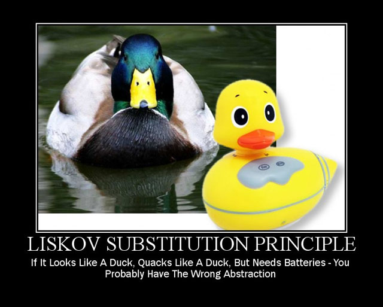
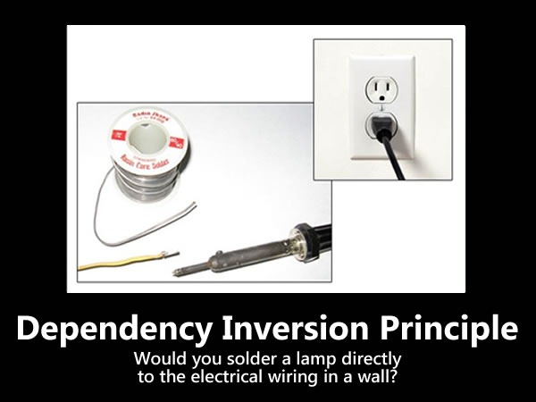

11 Object Oriented Design
Introduction
Object oriented design is a process of planning a software system where objects will interact with each other to solve specific problems.
The saying goes, > “Proper object oriented design makes a developer’s life easy, whereas bad design makes it a disaster.”
Class design principles: SOLID
11.1 SOLID Principles
Single responsibility Principle (SRP)
Every software module should have only one reason to change.
Software module: class, function etc.
Reason to change: responsibility
Open Close Principle (OCP)
Software modules should be closed for modifications but open for extensions.
- Solution which will not violate OCP
- Use of inheritance
Liskov substitution principle (LSP)
Subclasses should be substitutable for base classes.
- The best way to implement the LSP is by implementing correct inheritance hierarchy.

Interface Segregation principle (ISP)
Clients should not be forced to implement interfaces they don’t use.
- We should prefer many client interfaces rather than one general interface and each interface should have a specific responsibility.
Dependency Inversion principle (DIP)
High-level modules should not depend upon low-level modules. Both should depend upon abstractions.
Abstractions should not depend on details. Details should depend on abstractions.

11.2 Design Patterns
Introduction
One of the interesting things about software development is that when we create a software system, we are actually modeling a real-world system.
To write the business software systems, the developers must thoroughly understand the business models.
A design pattern is a common solution to a common problem in a given context.
Patterns lend themselves perfectly to the concept of reusable software development.
Why Design Patterns?
Each pattern describes a problem which occurs over and over again in our environment, and then describes the core of the solution to that problem.
The pattern name is a handle we can use to describe a design problem, its solutions, and consequences in a word or two
The problem describes when to apply the pattern. It explains the problem and its content.
The solution describes the elements that make up the design, their relationships, responsibilities, and collaborations.
The consequences are the results and trade-offs of applying the pattern.
Classification of patterns
Three main groups of patterns:
Creational patterns create objects for us, rather than having us instantiate objects directly. This gives our program more flexibility in deciding which objects need to be created for a given case.
Structural patterns help us compose groups of objects into larger structures, such as complex user interfaces or accounting data.
Behavioral patterns help us define the communication between objects in our system and how the flow is controlled in a complex program.
11.3 Creational Patterns
Abstract factory
Intent
Provide an interface for creating families of related or dependent objects without specifying their concrete classes.
A hierarchy that encapsulates: many possible “platforms”, and the construction of a suite of “products”.
The
newoperator considered harmful.
Problem
If an application is to be portable, it needs to encapsulate platform dependencies.
These “platforms” might include: windowing system, operating system, database, etc.
Too often, this encapsulatation is not engineered in advance, and lots of
#ifdefcase statements with options for all currently supported platforms begin to procreate like rabbits throughout the code.
Builder
Intent
Separate the construction of a complex object from its representation so that the same construction process can create different representations.
Parse a complex representation, create one of several targets.
Problem
An application needs to create the elements of a complex aggregate.
The specification for the aggregate exists on secondary storage and one of many representations needs to be built in primary storage.
Factory method
Intent
Define an interface for creating an object, but let subclasses decide which class to instantiate. Factory Method lets a class defer instantiation to subclasses.
Defining a “virtual” constructor.
The
newoperator considered harmful.
Problem
- A framework needs to standardize the architectural model for a range of applications, but allow for individual applications to define their own domain objects and provide for their instantiation.
Prototype
Intent
Specify the kinds of objects to create using a prototypical instance, and create new objects by copying this prototype.
Co-opt one instance of a class for use as a breeder of all future instances.
The
newoperator considered harmful.
Problem
Application “hard wires” the class of object to create in each “new” expression.
Singleton
Intent
Ensure a class has only one instance, and provide a global point of access to it.
Encapsulated “just-in-time initialization” or “initialization on first use”.
Problem
- Application needs one, and only one, instance of an object. Additionally, lazy initialization and global access are necessary.